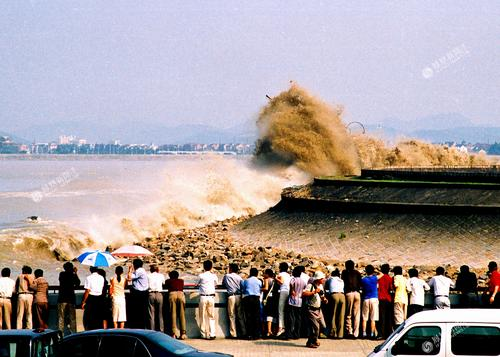

千岛湖

千島湖，即新安江水庫，位於浙江省杭州市淳安縣境內，小部分連接杭州市建德市西北，是為建新安江水電站攔蓄新安江上游而成的人工湖，1955年始建，1960年建成。水庫壩高105米，長462米；水庫長約150千米，最寬處達10餘千米；最深處達100餘米，平均水深30.44米，在正常水位情況下，面積約580平方千米，蓄水量可達178億立方米，在最高水位時擁有1078座大於0.25平方千米的陸橋島嶼，並以2平方千米以下的小島為主，島嶼面積共409平方千米。 [1-3] 杭州千島湖與加拿大渥太華西南200多千米的金斯頓千島湖、湖北黃石陽新仙島湖並稱為"世界三大千島湖"。
千島湖水在中國大江大湖中位居優質水之首，為國家一級水體，被譽為“天下第一秀水”。1984年12月15日浙江省地名委員會正式將新安江水庫命名為“千島湖”。 [2]
2001年，千島湖風景區被評為首批中國AAAA級旅遊區。2010年4月18日，國家旅遊局授予千島湖風景區為國家5A級旅遊景區殊榮。